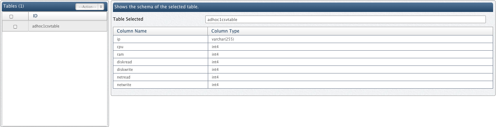

Viewing Hive tables
In this chapter
This chapter explains how to view tables created using Manage Hive section.
Viewing Hive tables
Table adhoc1csvtable created using Manage Hive can be seen in Manage Databases section.

You can use Query Designer to query the csv data registered using this parser.
Copyright © 2015 QueryIO Corporation. All Rights Reserved.
QueryIO, "Big Data Intelligence" and the QueryIO Logo are trademarks
of QueryIO Corporation. Apache, Hadoop and HDFS are trademarks of The Apache Software Foundation.